Уюга и Хадарта
( Малое Море, залив Хагдан-Далай )
- 17-20 июля 2008 -
Из серии "Мемуары. Лето-2008"
17 июля. Я все еще в отпуске. Приехал в Иркутск,
бегаю по магазинам. Света сматывается с работы пораньше, заправляет
свой Runx, и вот мы уже мчимся со скоростью 160 км\ч из города. А чего
бы и не лететь, когда нас всего двое, в багажнике два рюкзака, два гидрокостюма,
канистра бензина, а впереди - Ольхон, а на Ольхоне нас ждет Лёха Иркутский,
а у Лёхи есть серф и мотоцикл :) НО! Лёха сказал: Где ж вы раньше-то
были!!! На пароме уже "война и немцы" :) В обшем, попали
в самый разгар сезона, очередь на паром огромная, люди стоят по два
дня, страсти кипят, морды бьют, номера срывают, и даже иногда стреляют!
Весь этот цирк мы наблюдали при погрузках маленького парома, пока стояли
в очреди и ждали Лёху. А он в это время где-то по маломорским турбазам
работал - собирал бабки за туры (хорошая работа :). Когда он приехал,
решили, что Ольхон нам в этот раз не судьба посмотреть, и покататься
по нему на мотоцикле тоже облом, но зато Лёха сможет завтра привезти
с Ольхона серф, и еще он знает отличное место, которое просто создано
для того, чтобы там катались такие начинающие серферы, как мы :)
Место это находится между ущельями Сарма и Курма, а точнее - между мысами
Уюга и Хадарта (так-то это место называется залив Хагдан-Далай, это
я уже потом на другой карте увидел).
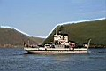
. 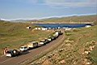
.
Паром, очередь и Леха с бабками :)
Так что расстались с Лёхой до завтра и поехали искать
Уюгу. Ну и нашли ее уже в сумерках. Гром гремит, молнии над Ольхоном
сверкают, а мы палатку ставим на берегу залива :) Правда у нас дождя
не было.
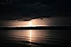
. 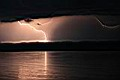
. 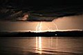
. 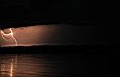
Гроза над Ольхоном (Лёха потом сказал, что даже град был!)
18 июля. С утра прогулялись на сам мыс Уюга. В
нем оказывается еще и грот есть! я в этом гроте прошлым летом был, когда
Лёха нас с Тутая на моторке катал, а Света тут когда-то зимой была.
Но мы в грот не полезли, там темно и холодно еще с утра было.
Приехал Лёха на УАЗике, привез серф и два паруса. Новый парус большой,
на 7,5. И мачта навороченная какая-то к нему, хорошо, что Лёха помог
нам паруса натянуть. Потом он и Артем поехали в Курму, маршрут новый
делать, а мы стали в заливе бултыхаться. Особенно я. Светка уже опытный
боец, в Иркутске на серф-станции на курсы ходит, у инструкторов обучается.
А я чего - с прошлого лета на воде не стоял, ну в итоге и получил мачтой
по голове, и опять парус порвал :) Тот, который маленький и старенький.
Потом стали гонять с новым и большим, но с ним гонять ну-о-о-очень трудно,
это уже для совсем опытных дяденек, типа Лёхи :) В итоге попросили у
соседей скотч и заклеили маленький парус. И было нам счастье :) Пока
ветер был :) а то он периодически проподал, но это нормально. Главное
в заливе волны не было, Уюга и Хадарта прикрывали хорошо.
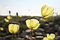
- 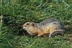
Флора и фауна мыса Уюга
Малое море и острова
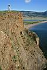
На Уюге
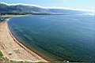
Соседний залив, севернее Уюги
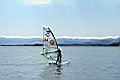
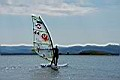
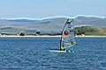
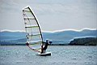
Это мы по заливу туда-сюда гоняемся за ветром :)
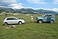
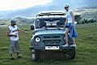
Лёха, Света и машинки
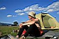
Это я
Вечером Лёха с Артемом приехали. Артем решил попробовать
на доску встать. А Лёха устроил нам джип-сафари до Курмы и экскурсию
в детский палаточный лагерь "Страна Байкалия", он там раньше
инструктором работал. А заодно у Светы там тетенька знакомая оказалась.
А бедные дети там все лето в палатках живут, в походы и на Байкал ходят,
и взрослые, вожатые и повара, тоже в палатках мучаются, вот такой вот
клёвый лагерь :)
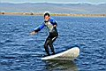
- 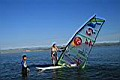
Артём учится, Света учит
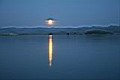
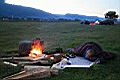
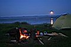
Вечера на заливе
19 июля. Серферские покатушки продолжаются. Я уже
даже полюбил большой парус. А Света уже руки смозолила о гик. В общем,
все клево было. Потом решили допить коньяк. Потом очень сильно поругались.
Потом помирились и пошли смотреть грот, который в Уюге. Потом Света
еще на серфе каталась, а мне что-то уже надоело. Хотя че бы не кататься
- солнце светит, гидрокостюм греет (я же в Иркутске не просто так по
магазинам бегал, я же купил черно-оранжевый гидрик, толщина 3-4, подростковый
конечно, но зато клёвый :) Блин, уперся в границы залива - скучно стало
тудым-сюдым ходить, а в Байкал выходить еще страшно. Там волны, я с
большой волны на доску не встану. Выходил утром в соседний северный
залив, утром волна там еще хоть и не большая была, но меня прилично
штормило.
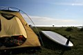
. 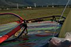
Утро. Доска и паруса еще спят :)
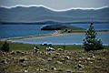
Уюга издалека
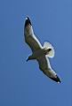
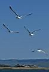
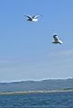
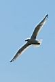
ЧАЙКИ !!!
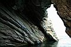
.
. 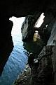
. 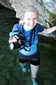
. 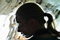
. 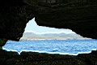
В гроте Уюга
20 июля. С утра пасмурно было. Потом ливень был.
Света под дождем каталась. Говорит, что под дождем клёво, но в грозу
страшно. Потом доска уплыла, пока мы в палатке от грозы прятались, но
я ее догнал на соседской лодке :)
Лёха приехал автостопом, т.к. УАЗик по делам уехал. Упаковали доску-паруса
и отвезли ее на ближайшую турбазу, Лёха ее потом заберет. Ну вот и все
- едем до парома. Кушаем позы, ждем Антона, это Лёхин брат из Питера,
он на Ольхоне тусовался, "пока не затошнит" :) Антон с нами
поехал, а Лёха на Ольхон вернулся.
А мы на Ольхон попозже съездим, в августе. Вот такие вот дела.
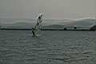
. 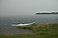
под дождем
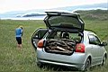
. 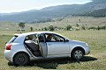
. 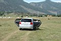
Способы перевозки дров и серфа в иномарке
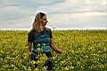
Светка в желтом поле (по дороге в Иркутск)
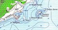
Карта местности
Лёха - СПАСИБО за СЕРФ !!!
Светка - СПАСИБО за КОМПАНИЮ !!!
Фотографии - Лёха Слюдянский и Светка Снегурочка
(июль 2008)
Текст - Лёха Слюдянский (октябрь 2008)
Тема про Малое Море в разделе "Бродяги"
:
Безвременье (2006)
ТуТаЙ (2007)